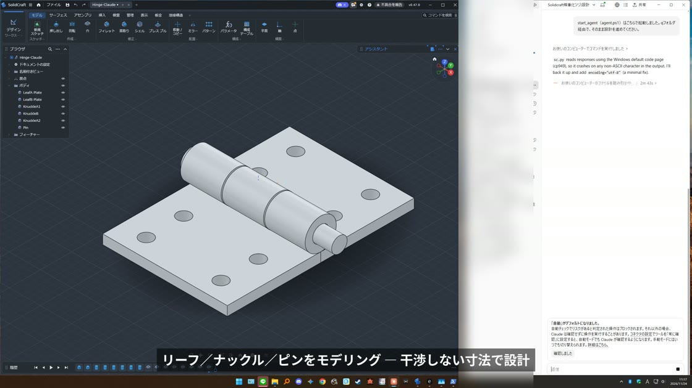
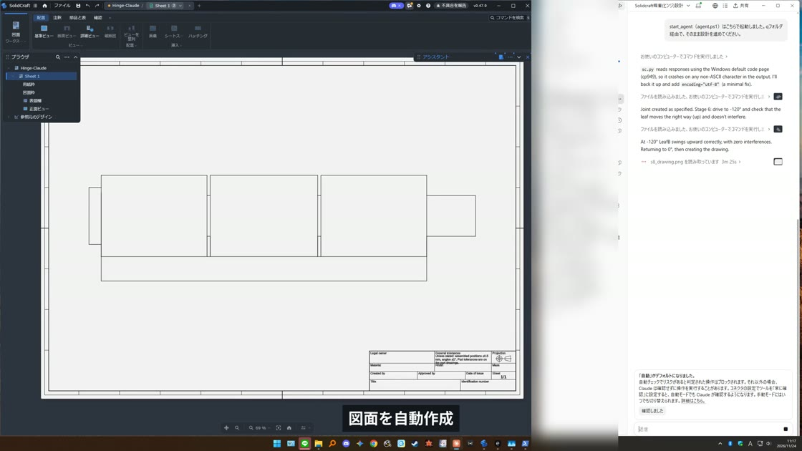

A cloud AI's sandbox has no inbound door — nothing can connect to it directly. Agent Hands Kit flips the approach: let agents use the human entrances (the desktop GUI, chat boxes, shared folders) with hands of their own. A toolkit hardened in daily production use.
Not a pile of scripts — one kit for seeing, acting, and handing over work.
A resident agent that sees the Windows desktop and acts on elements: UI Automation snapshots (diffed and pruned to save tokens), screenshots, and two input modes — clipboard paste and keystrokes. It can drive apps that have no API at all.
Headless script runners for Blender / Inkscape / GIMP / FreeCAD / KiCad / LTspice. Success is judged by the declared output artifacts, not by exit codes. Includes img-peek for cheap visual checks.
Twelve PowerShell tools (delegation, job control, locking, web reading, document extraction, and more), a file-mailbox pattern that turns a shared folder into the handoff point, and a delegation harness pattern for passing long tasks to another AI.
Organized by part under components/ in the repository.
| Part | Contents |
|---|---|
desktop-agent/ | The C# / .NET desktop GUI agent, its detailed README, and the thin client desktop.ps1. Localhost + token auth only |
app-wrappers/ | Seven batch wrappers (Blender / Inkscape / GIMP / FreeCAD / KiCad / LTspice / img-peek) |
powershell-tools/ | Twelve tools: delegation, jobs, locking, web reading, full-text search, self-scheduling, and more |
voicevox-harness/ | Drives the VOICEVOX speech engine through its API (no GUI): accent/pitch plan display plus F0-measured verification of the output |
notification-watcher/ | Turns Windows notifications into an event source for agents |
patterns/ · mailbox/ | The delegation harness pattern, plus the file-mailbox design and templates |
This demo video for the open-source CAD "SolidCraft" was produced end to end by AI agents using this kit — from screen recording to narration.


voicevox-harness (vv-say) drove VOICEVOX without its GUI and generated scene-by-scene commentary matched to the captions, verified by measuring the output's F0 contour.Requires Windows 10/11, the .NET 10 SDK, and PowerShell 5.1+.
git clone https://github.com/thanatos333/agent-hands-kit.git
# Build and deploy the Desktop Agent (single-file exe)
dotnet publish components/desktop-agent -c Release -o $env:USERPROFILE\tools\desktop-agentToken generation, the resident-task setup, and tool placement are covered in the repository README and each component's docs. Optionally combine with a private network such as Tailscale (cloud AI ⇔ PC) and shared storage such as Google Drive (the mailbox).
These tools hold strong privileges, so the boundaries are decided up front. See SECURITY.md in the repository for the full text.
*_OK / *_FAILED marker, not by prose; long output is spilled to files.The big prior project in this space is CLI-Anything (University of Hong Kong). Same goal — letting AI agents use real apps — but the opposite approach.
| Agent Hands Kit | CLI-Anything | |
|---|---|---|
| Approach | Operates the human-facing side — the desktop GUI — directly, with script wrappers where an app offers them | Auto-generates a CLI that connects to the app's back end (scripting engine / internal API) |
| Coverage | Anything with a GUI, including apps and web services with no back-end API at all | Only apps that have a scriptable back end or an API |
| Runtime | Windows-native: PowerShell plus a single-file exe | Python plus a generated harness; on Windows it needs Git Bash / WSL |
| Freedom | You write whole scripts, so the ceiling is the app's full capability | Limited to the commands the harness provides |
| Footprint | One .ps1 file and one exe; near-zero dependencies, and you can fix it yourself | State management, a REPL and a test suite — a bigger machine |
| Strength | GUI-only apps, lightness, freedom | Breadth (40+ prebuilt harnesses) and tested, reproducible commands |
For standardized, repeatable operations on supported apps, CLI-Anything is a solid choice. If you want to drive everything on Windows — including GUI-only apps — lightly and freely, take Agent Hands Kit.
MIT licensed; it will not be sold. If it helps you, a GitHub Sponsors tip — or a pay-what-you-want tip via Polar — keeps it going.
Maintained best-effort, with no warranty.